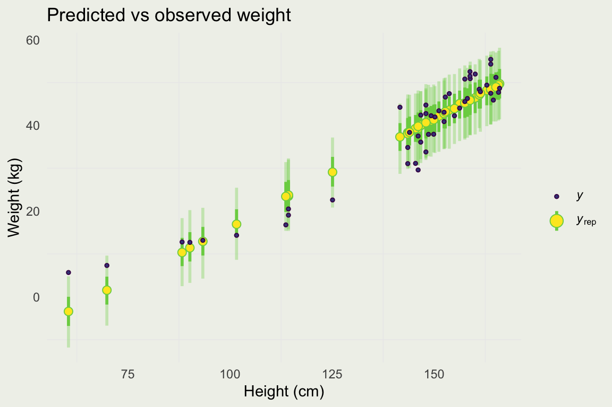

We borrow this example from Richard McElreath’s Statistical Rethinking
The data sets provided have been produced between 1969 to 2008, based on Nancy Howell’s observations of the !Kung San
From Wikipedia: “The ǃKung are one of the San peoples who live mostly on the western edge of the Kalahari desert, Ovamboland (northern Namibia and southern Angola), and Botswana.”
Howell Dataset
Data sample and summary:
height
weight
age
male
151.765
47.82561
63
1
139.700
36.48581
63
0
136.525
31.86484
65
0
156.845
53.04191
41
1
145.415
41.27687
51
0
163.830
62.99259
35
1
height weight age
Min. : 53.98 Min. : 4.252 Min. : 0.00
1st Qu.:125.09 1st Qu.:22.008 1st Qu.:12.00
Median :148.59 Median :40.058 Median :27.00
Mean :138.26 Mean :35.611 Mean :29.34
3rd Qu.:157.48 3rd Qu.:47.209 3rd Qu.:43.00
Max. :179.07 Max. :62.993 Max. :88.00
Notice a non-linearity
Thinking about why this should be, can give you an insight into how to model these data
Howell Dataset
For now, we will focus on the linear subset of the data
We will demonstrate the non-linear model at the end
We will restrict our attention to adults (age > 18)
General Approach
Assess the scope of the inferences that you will get with this model
Unless you are doing causal inference, you should interpret your coefficients as comparisons (RAOS, Page 84)
Set up reasonable priors and likelihood
For more complex models, perform a forward simulation with fixed parameter values and try to recover them by running an inference algorithm. See this example for a standard epidemiological model.
Perform a prior predictive simulation
Possibly adjust your priors
Fit the model to data
Assess the quality of the inference and the quality of the model
Improve or fix your model and go back to #3
Howell Regression
We will build a predictive model for adult Weight \(y\) given Height \(x\) using the Howell dataset
We have to specify \(\alpha_{l}\) and \(\alpha_s\), where l and s signify location and scale, and r, the rate of the exponential
If we work on the original scale for \(x\), it is awkward to choose a prior for the intercept : it corresponds to the weight of the person with zero height
This can be fixed by subtracting the average height from \(x\)
Why is \(\text{Exp}(r)\) is a reasonable prior for \(\sigma\)?
Howell Regression
We define a new variable, the centered version of \(x\): \(x^c_i = x_i - \bar{x}\)
Now \(\alpha\) corresponds to the weight of an average person
Checking Wikipedia reveals that the average weight of a person in Africa is about 60 kg
They don’t state the standard deviation, but it is unlikely that an African adult would weigh less than 30 kg and more than 120 kg so we will set the prior sd = 10 \[
\begin{eqnarray}
y_i & \sim & \text{Normal}(\mu_i, \, \sigma)\\
\mu_i & = & \alpha + \beta x^c_i \\
\alpha & \sim & \text{Normal}(60, \, 10) \\
\beta & \sim & \text{Normal}(\beta_{l}, \, \beta_s) \\
\sigma & \sim & \text{Exp}(r) \\
\end{eqnarray}
\]
What about the slope \(\beta\)?
Howell Regression
In this dataset, the units of \(\beta\) are \(\frac{kg}{cm}\), since the units of height are \(cm\)
In the dataset, \(\E(\beta) = 0.55\) with a standard error of 0.006, but since we are uncertain how applicable that is to !Kung, we will allow the prior to vary more \[
\begin{eqnarray}
y_i & \sim & \text{Normal}(\mu_i, \, \sigma)\\
\mu_i & = & \alpha + \beta x^c_i \\
\alpha & \sim & \text{Normal}(60, \, 10) \\
\beta & \sim & \text{Normal}(0.55, \, 0.1) \\
\sigma & \sim & \text{Exp}(r) \\
\end{eqnarray}
\]
What about the error term \(\sigma\)?
Howell Regression
We know that \(\sigma\) must be positive, so a possible choice for the prior is \(\text{Normal}^+\), Exponential, etc.
At this stage, the key is to rule out implausible values, not to get something precise, particularly since we have enough data (> 340 observations)
From the background data, the residual standard error was 4.6, which implies the exponential rate parameter of about 1/5 \[
\begin{eqnarray}
y_i & \sim & \text{Normal}(\mu_i, \, \sigma)\\
\mu_i & = & \alpha + \beta x^c_i \\
\alpha & \sim & \text{Normal}(60, \, 10) \\
\beta & \sim & \text{Normal}(0.55, \, 0.1) \\
\sigma & \sim & \text{Exp}(0.2) \\
\end{eqnarray}
\]
We are now ready to perform a prior predictive simulation
Prior Predictive Simulation
The simulation follows the generative process defined by the model
d <- d |>mutate(height_c = height -mean(height))round(mean(d$height_c), 2)
data_mean <-mean(d$weight)mean_dist <-colMeans(pr_p)ggplot(data.frame(data_mean, mean_dist), aes(mean_dist)) +geom_histogram() +geom_vline(xintercept = data_mean, color ='red') +xlab("Distribution of Weight means (kg) under the prior") +ylab("") +theme(axis.title.y=element_blank(), axis.text.y=element_blank(), axis.ticks.y=element_blank())
Prior Predictive Simulation
To get a sense for the possible regression lines implied by the prior, we can fit a linear model to each simulation draw, and plot the lines over observations
glue::glue('From the R simulation, 90% interval for y_pred = [{mqi$y_pred.lower |> round(2)}, {mqi$y_pred.upper |> round(2)}]')
From the R simulation, 90% interval for y_pred = [41.24, 55.25]
Evaluting Model Quality
Evaluating Quality of the Model
There are at least two stages of model evaluation: 1) the quality of the draws and 2) the quality of predictions
There is also a question of model fairness
How were the data collected?
People will likely interpret the results causally, even if not appropriate
How will the model be used?
Example: Correctional Offender Management Profiling for Alternative Sanctions (COMPAS)
Just because the draws have good statistical properties (e.g., good mixing, low auto-correlation, etc.), it does not mean the model will perform well
Model performance is assessed on how well it can make predictions, minimize costs and/or maximize benefits. Predictive accuracy is a common way of evaluating model performance.
Evaluating Quality of the Model
Once we are satisfied that the draws are statistically well-behaved, we can focus on evaluating predictive performance
We typically care about predictive performance out-of-sample
In general, a good model is well-calibrated and makes sharp predictions (Gneiting et al. 2007)1
For in-sample assessment, we perform Posterior Predictive Checks or PPCs
To assess out-of-sample performance, we rely on cross-validation or its approximations
If you are making causal (counterfactual) predictions, naive cross-validation will not work. Why?
Model Evaluation
Here is the high-level plan of attack:
Fit a linear model to the full !Kung dataset (not just adults) and let RStanArm pick the priors (don’t do this at home)
We know that this model is not quite right
Evaluate the model fit
Fix the model by thinking about the relationship between height and weight
Evaluate the improved model
Compare the linear model to the improved model
Model Evaluation
The following fits a linear model to the full dataset (not just adults)
Model Info:
function: stan_glm
family: gaussian [identity]
formula: weight ~ height
algorithm: sampling
sample: 1200 (posterior sample size)
priors: see help('prior_summary')
observations: 544
predictors: 2
Estimates:
mean sd 10% 50% 90%
(Intercept) -33.8 1.1 -35.1 -33.7 -32.4
height 0.5 0.0 0.5 0.5 0.5
sigma 5.0 0.1 4.8 5.0 5.2
Fit Diagnostics:
mean sd 10% 50% 90%
mean_PPD 35.6 0.3 35.2 35.6 36.0
The mean_ppd is the sample average posterior predictive distribution of the outcome variable (for details see help('summary.stanreg')).
MCMC diagnostics
mcse Rhat n_eff
(Intercept) 0.0 1.0 1198
height 0.0 1.0 1228
sigma 0.0 1.0 836
mean_PPD 0.0 1.0 1126
log-posterior 0.1 1.0 497
For each parameter, mcse is Monte Carlo standard error, n_eff is a crude measure of effective sample size, and Rhat is the potential scale reduction factor on split chains (at convergence Rhat=1).
Visual Posterior Predictive Checks
The idea behind PPCs is to compare the distribution of the observation to posterior predictions
We already saw an example of how to do it by hand
Here, we will do using functions in RStanArm
library(bayesplot)# bayesplot::pp_check(m2) <-- shortcut# predict for every observed pointyrep <-posterior_predict(m2) # select 50 draws at randoms <-sample(nrow(yrep), 50)# plot data against predictive densitiesppc_dens_overlay(d$weight, yrep[s, ])
Visual Posterior Predictive Checks
We can also compute the distributions of test statistics:
library(gridExtra)p1 <-ppc_stat(d$weight, yrep, stat ="mean"); p2 <-ppc_stat(d$weight, yrep, stat ="sd")q25 <-function(y) quantile(y, 0.25); q75 <-function(y) quantile(y, 0.75)p3 <-ppc_stat(d$weight, yrep, stat ="q25"); p4 <-ppc_stat(d$weight, yrep, stat ="q75"); grid.arrange(p1, p2, p3, p4, ncol =4)
ppc_stat is a shorthand for computation on each posterior (predictive) draw
For example, ppc_stat(d$weight, yrep, stat = "mean") is equivalent to:
Setting \(T(y) = \text{mean(d\$weight)}\) and \(T_{\text{yrep}} = \text{rowMeans(yrep)}\)
Visual Posterior Predictive Checks
Since we have a distribution at each observation point, we can plot the predictive distribution at each observation
We will first randomly select a subset of 50 people
Each column of yrep is a prediction for each observation point
s <-sample(ncol(yrep), 50)bayesplot::ppc_intervals( d$weight[s],yrep = yrep[, s],x = d$height[s],prob =0.5,prob_outer =0.90) +xlab("Height (cm)") +ylab("Weight (kg)") +ggtitle("Predicted vs observed weight")

Quantifying Model Accuracy
We looked at some visual evidence for in-sample model accuracy
The model is clearly doing a poor job of capturing observed data, particularly in the lower quantiles of the predictive distribution
In a situation like this, we would typically proceed to model improvements
Often, the model is not as bad as this one, and we would like to get some quantitative measures of model fit1
We do this so we can assess the relative performance of the next set of models
Quantifying Model Accuracy
One way to assess model accuracy is to compute an average square deviation from point prediction: mean square error
# root mean square errormean((d$weight -colMeans(yrep))^2) |>sqrt() |>round(2)
[1] 4.98
# your book reports median absolute errormedian(abs(d$weight -colMeans(yrep)))
[1] 3.58
Quantifying Model Accuracy
In a probabilistic prediction, we can assess model calibration
Calibration says that, for example, 50% intervals contain approximately 50% of the observations, and so on
A well-calibrated model may still be a bad model (see below) as the uncertainty may be too wide; for two models with the same calibration, we prefer the one with lower uncertainty
A popular “proper” scoring rule for probabilistic prediction is log score
This is equivalent to the log predictive density \(\log f(y \mid \theta)\)
We would like to estimate the model’s ability to predict data it has not seen, even though we do not observe the true data-generating process
This quantity is approximated by log-pointwise-predictive-density \[
\text{lppd} = \sum_{n=1}^{N} \log \left( \frac{1}{S} \sum_{s=1}^{S} f(y_n \mid \theta_{-n, s}) \right)
\]
To compute this quantity, fit the model N times, dropping one point at a time (-n)
S is the number of posterior samples, and \(\theta_{-n, s}\), is the s-th sample without the n-th data point
PSIS-LOO (Pareto Smoothed Importance Sampling, Vehtari et al, 2017) provides a computationally efficient way to approximate LOO, without refitting the model N times
Quantifying Model Accuracy
library(loo)lm2 <-loo(m2)lm2
Computed from 1200 by 544 log-likelihood matrix.
Estimate SE
elpd_loo -1648.7 14.3
p_loo 3.0 0.3
looic 3297.3 28.6
------
MCSE of elpd_loo is 0.1.
MCSE and ESS estimates assume MCMC draws (r_eff in [0.6, 1.0]).
All Pareto k estimates are good (k < 0.68).
See help('pareto-k-diagnostic') for details.